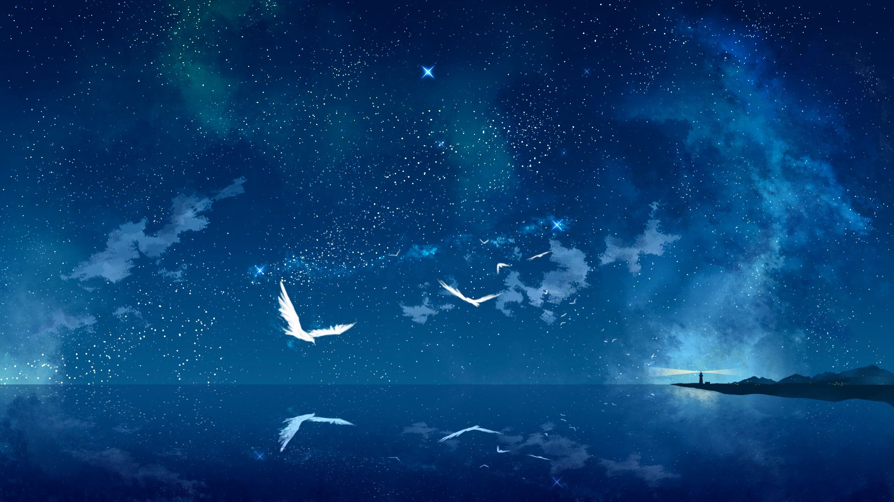

I've always had strong a passion for music,
and this is a story about my musical journey.
When I was younger I played the flute and violin,
but I've since shifted to making music electronically,
and have lacked the opportunity for formal musical education.
While I'm no musical professional,
I hope to one day compose music for games or other media,
and though that may be a challenging goal I intend to get there!
Years ago, when I was 14, I decided to give a go at digital composition, at which point it'd been a long while since I'd played any instruments and my musical knowledge was lacking, but that wasn't going to stop me!
Here's one of the first compositions I was proud of, with a fitting name for these early beginnings.
2014 - Sunrise
Dreams
Since a young age I was fascinated with space,
to the point that I wanted to be an Astronaut when I grew up.
I'd always dream of what could be, what discoveries there were to be made, what technologies were yet to be invented.
I wondered what worlds were out there, waiting to be discovered.
I wanted to help people dream of what could be, and I think music is magical; it can transport your mind to another world, it can turn you from sadness to joy, it can make you feel things you wouldn't normally feel.
I knew if I had to choose one purpose in life it'd be to inspire people through music just as I had been.
One of my early influences was Owl City / Adam Young, who's music inspired me in a way that I never had been before, with his dreamy lyrics, and soft synths.
All of this set the tone for what I wanted my music to be like, and led me to explore the creation of electronic music.
2015 - Beyond the Stars
2015 - Eternity (Snippet)
Kingdoms
Another one of my great inspirations is a composer named Adrian von Ziegler, known for his beautiful Celtic music.
Music is powerful in setting the tone for things, it brings other worlds closer to ours, it's the final touch in making the make believe believable;
imagine the Lord of the Rings without its breathtaking soundtrack by Howard Shore.
Von Ziegler's music had me dreaming once more, this time of far away places, and forgotten lands. His music seemed to tell a story, only with instruments, and
led me to explore creation of instrumental music for some time, in hopes that it'd click.
It was a lot more difficult for me compared to electronic music, although I enjoyed the process and didn't totally fail, it would be a while before I'd return to making this kind of music.
2016 - Sacred Forest (Snippet)
2018 - Hope (Snippet)
Star Diver
For years I'd kept my music to myself and close friends or family because I felt I wasn't good enough yet, but I was determined to get my music out there.
While I'd created some things I was pleased with, I wasn't very consistent, and one important thing I had yet to learn was how to utilize percussion and bass.
Omitting these things is fine for ambient tracks, but not knowing how to utilize these things correctly can cause music to sound flat, and the more upbeat ones need, well, a beat.
Though I intended to keep creating some ambient tracks,
experimenting with percussion and bass for the first time began the evolution of my music, and in 2019, I adopted the alias Star Diver to release my first few songs online.
Nebula Beach was one of the first songs where I implemented the new things I learned, and although flawed, it was definitely an important step forward!
2019 - Flow of Time (Snippet)
2019 - Nebula Beach (Snippet)
Evolution
As time went on I feel as though I began to adopt my own style, though I'm still very much influenced by my initial inspirations.
By this point I had improved significantly in making melodies, layering different sounds, and overall in knowing how to structure a song.

I've found I like to incorporate the piano, violin, cello, or similar sounding synths into my songs.
2020 - Awaken (Snippet)
2021 - Between Worlds (Snippet)
The Beauty of Piano
Sometimes less is more.
While I enjoyed layers of different sounds together in harmony, I've found the elegance of a lone piano can be mesmerizing.
2020 - Colorful Abyss
2020 - Wonder
Memories
There seems to be a powerful connection between music and memories. Listening to music from the past returns me to that time, which can be hard because some of those times were rough for me.
At the same time I can take comfort in knowing that music is one thing that helped keep me afloat.
2019 - Being
2019 - Dream
The Future
Music is still a huge passion for me, and I'll always strive to improve.
In recent years I've been working with someone on a indie game that I'm also very passionate about!
It's fantasy themed, and the kind of music that demands isn't exactly up my alley at the moment, but I've been exploring instrumental music once more and hope to further my skills as to accomplish what I need.
I'm still not quite where I want to be,
but I try not to compare myself to others because I know I'm on my own journey,
and I'll get to where I want to be when I do!
At the moment I can't spend as much time on these things as I'd like,
but if the opportunity should ever present itself,
I would surely benefit from some formal education on things like music theory and composition.